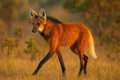
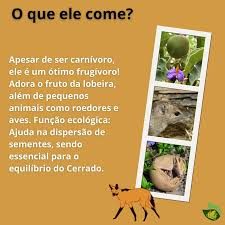
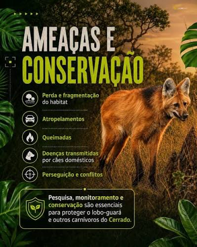

Explicação sobre os traços anatômicos e a adaptação do animal ao ambiente. O lobo-guará destaca-se por suas pernas longas e finas, uma adaptação evolutiva que facilita a visão e a movimentação na vegetação alta do Cerrado. Sua pelagem avermelhada contrasta com as patas pretas e o queixo branco, conferindo-lhe uma aparência inconfundível. Apesar do nome, não é um lobo verdadeiro nem um raposa, sendo o único representante do seu gênero.

Análise dos hábitos alimentares e sua importância na regeneração da flora. Diferente de outros grandes canídeos estritamente carnívoros, o lobo-guará tem uma dieta onívora bastante equilibrada. Ele se alimenta de pequenos roedores, aves e répteis, mas a metade da sua refeição consiste em frutos, com destaque para a fruta-do-lobo (Solanum lycocarpum). Essa preferência faz dele um excelente dispersor de sementes, essencial para a conservação da vegetação nativa.

